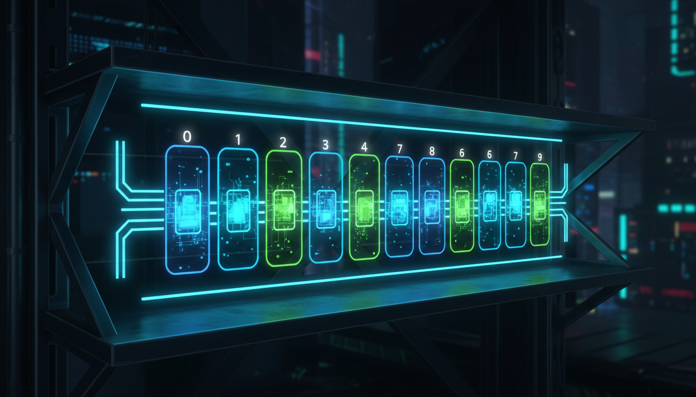

Оголошення, ініціалізація, доступ до елементів, перебір

Масив — це структура даних, що зберігає елементи одного типу у послідовних комірках пам'яті. Всі елементи мають однаковий тип та розмір.
// Оголошення масиву:
// тип ім'я[розмір];
#include <iostream>
int main() {
// Оголошення та ініціалізація
int numbers[5] = {10, 20, 30, 40, 50};
// Доступ до елементів (індексація з 0)
std::cout << numbers[0] << std::endl; // 10
std::cout << numbers[2] << std::endl; // 30
std::cout << numbers[4] << std::endl; // 50
// Зміна елемента
numbers[1] = 25;
// Розмір масиву
int size = sizeof(numbers) / sizeof(numbers[0]);
std::cout << "Розмір масиву: " << size << std::endl;
return 0;
}#include <iostream>
int main() {
int arr[] = {3, 7, 2, 9, 1, 5};
int n = sizeof(arr) / sizeof(arr[0]);
// Звичайний цикл
std::cout << "Елементи: ";
for (int i = 0; i < n; i++) {
std::cout << arr[i] << " ";
}
std::cout << std::endl;
// Range-based for (C++11)
std::cout << "Елементи: ";
for (int x : arr) {
std::cout << x << " ";
}
std::cout << std::endl;
// Пошук максимуму
int max = arr[0];
for (int i = 1; i < n; i++) {
if (arr[i] > max) {
max = arr[i];
}
}
std::cout << "Максимум: " << max << std::endl;
return 0;
}